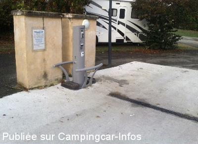

ASN = Aire de services avec stationnement nuit possible de :
BERNOS BEAULAC
(N° 151)
Accès/adresse :
Route Grande
33430 BERNOS BEAULAC
33430 BERNOS BEAULAC
Latitude : (Nord) 44.36933° Décimaux ou 44° 22′ 9′′
Longitude : (Ouest) -0.24303° Décimaux ou 0° 14′ 34′′
Tarif : 2014
Stationnement : 4 €
Eau : 2 €
Type de borne : URBAFLUX
Services :


Bloc sanitaire avec lavabos
Barbecue
A proximité boulangerie.
Canoë sur place
Autres informations :
Ouvert toute l'année.
8 emplacements au bord de la rivière
Tel : +33 (0)556 254 142

Le 22/10/2014 par Boldo33
Le 22/10/2014 par Boldo33
Le 09/04/2007 par bfredozza1
de
guy
le 13/11/2015 :
arrêt pour une nuit, aire agréable, calme, borne en panne, commerce à proximité avec un trés bon acceuil
arrêt pour une nuit, aire agréable, calme, borne en panne, commerce à proximité avec un trés bon acceuil
de
Boldo33
le 17/10/2014 :
De passage le 15/10/2014 pour une halte de nuit, toujours aussi agréable mais effectivement désormais payant. Borne hors service ce jour.
De passage le 15/10/2014 pour une halte de nuit, toujours aussi agréable mais effectivement désormais payant. Borne hors service ce jour.
de
Anne
le 18/08/2014 :
§ De passage le 14 Août 2014, aire calme, propre. Agréable pour une halte.
Cependant, à signaler cette aire n'est pas gratuite : 4 € pour le stationnement et 2 € pour l'eau.
Merci à la municipalité pour cet endroit.
§ De passage le 14 Août 2014, aire calme, propre. Agréable pour une halte.
Cependant, à signaler cette aire n'est pas gratuite : 4 € pour le stationnement et 2 € pour l'eau.
Merci à la municipalité pour cet endroit.
de
lufloarasa
le 29/05/2013 :
Petite aire agréable pour faire un arrêt d'une nuit
il pleuvait d'où aire très calme mais nous y avons pensé en cas de beau temps, l'endroit doit être squatté par les jeunes
Petite aire agréable pour faire un arrêt d'une nuit
il pleuvait d'où aire très calme mais nous y avons pensé en cas de beau temps, l'endroit doit être squatté par les jeunes
de
paquiet
le 04/05/2012 :
de Jean-Claude 44
le 31 mars 21012 ( un samedi) nous avons essayé de passer la nuit. Arrivée au milieu de l'après-midi, endroit agréable et familiale. Nous étions 6 Cc. 20 heure un groupe de jeunes a occupé les lieux.Musique à fond, cris, chahut, bris de bouteille. 4h du matin situation inchangée, nous avons quitté les lieux pour finir la nuit sur le parking du terrain de foot.
de Jean-Claude 44
le 31 mars 21012 ( un samedi) nous avons essayé de passer la nuit. Arrivée au milieu de l'après-midi, endroit agréable et familiale. Nous étions 6 Cc. 20 heure un groupe de jeunes a occupé les lieux.Musique à fond, cris, chahut, bris de bouteille. 4h du matin situation inchangée, nous avons quitté les lieux pour finir la nuit sur le parking du terrain de foot.
de
guytsoun17
le 04/10/2011 :
nous avons passé 3 nuits fin septembre 2011 sur cette aire avec son plan d'eau.Le boulanger est à 100 mêtres
les nuits sont calmes malgré la route à proximité les services sont gratuits il y a des wc publics et un grand barbecue mis à la disposition des personnes qui passent la journée ou des camping caristes Un exemple à suivre et un grand merci à la commune
nous avons passé 3 nuits fin septembre 2011 sur cette aire avec son plan d'eau.Le boulanger est à 100 mêtres
les nuits sont calmes malgré la route à proximité les services sont gratuits il y a des wc publics et un grand barbecue mis à la disposition des personnes qui passent la journée ou des camping caristes Un exemple à suivre et un grand merci à la commune
de
fillol
le 23/07/2011 :
Né à Bernos-Beaulac, habitant dans le 13 et faisant bcp de km en c/car, bcp de communes feraient bien de s'inspirer du bon vouloir de la municipalité qui a compris que ses commerçants pouvaient tirer, aussi, profit de cette installation. Claude Fillol.
Né à Bernos-Beaulac, habitant dans le 13 et faisant bcp de km en c/car, bcp de communes feraient bien de s'inspirer du bon vouloir de la municipalité qui a compris que ses commerçants pouvaient tirer, aussi, profit de cette installation. Claude Fillol.
de
Mimi et François
le 28/05/2011 :
De passage plusieurs fois dans ce petit coin très agréable,assez calme malgré la route,nous arrivions après un gros orage,c'était bien trempé mais nous avons trouvé une place quand même,c'était plein7/8 ccars, commerces pas loin...nous aimons.
De passage plusieurs fois dans ce petit coin très agréable,assez calme malgré la route,nous arrivions après un gros orage,c'était bien trempé mais nous avons trouvé une place quand même,c'était plein7/8 ccars, commerces pas loin...nous aimons.
de
brouqueyre
le 13/02/2011 :
suis camping cariste et habitant de bernos ,je pense plutot au vendalisme à répétition qui on fait fermer l'eau à la commune ainsi que celui de la commune de bazas à 9 kms sur bordeaux à ce jour ,nous les camping caristes sommes punis pour des actes malveillants
suis camping cariste et habitant de bernos ,je pense plutot au vendalisme à répétition qui on fait fermer l'eau à la commune ainsi que celui de la commune de bazas à 9 kms sur bordeaux à ce jour ,nous les camping caristes sommes punis pour des actes malveillants
de
Jean-Phy
le 31/10/2009 :
Le branchement électrique se trouve au niveau du plan de travail à côté du barbecue. Endroit très agréable.
Le branchement électrique se trouve au niveau du plan de travail à côté du barbecue. Endroit très agréable.
de
jean-marc
le 18/05/2008 :
Je confirme l'absence de signalétique spécifique sur l'installation. Petit bémol également, l'eau était coupée pour deux robinets d'eau sur les 3 disponibles (dont celui à priori très pratique avec un pistolet de service type pompe gasoil). Sinon le site est très agréable avec la rivière le Ciron qui peut permettre en saison la descente en canoë et une aire de stationnement correcte et reposante malgré la proximité de la route plus en hauteur.
Je confirme l'absence de signalétique spécifique sur l'installation. Petit bémol également, l'eau était coupée pour deux robinets d'eau sur les 3 disponibles (dont celui à priori très pratique avec un pistolet de service type pompe gasoil). Sinon le site est très agréable avec la rivière le Ciron qui peut permettre en saison la descente en canoë et une aire de stationnement correcte et reposante malgré la proximité de la route plus en hauteur.
de
FEFE
le 15/04/2007 :
Très belle aire et équipements adaptés. Il manque peut-être un panneau sur le receptacle destiné a recevoir les eaux noires. Aménagement idéal autour de l'installation avec petit lac juste à côté. Boulangerie en face. Voir les photos de la nouvelle borne. Une adresse à retenir et félicitations à la commune!
Très belle aire et équipements adaptés. Il manque peut-être un panneau sur le receptacle destiné a recevoir les eaux noires. Aménagement idéal autour de l'installation avec petit lac juste à côté. Boulangerie en face. Voir les photos de la nouvelle borne. Une adresse à retenir et félicitations à la commune!